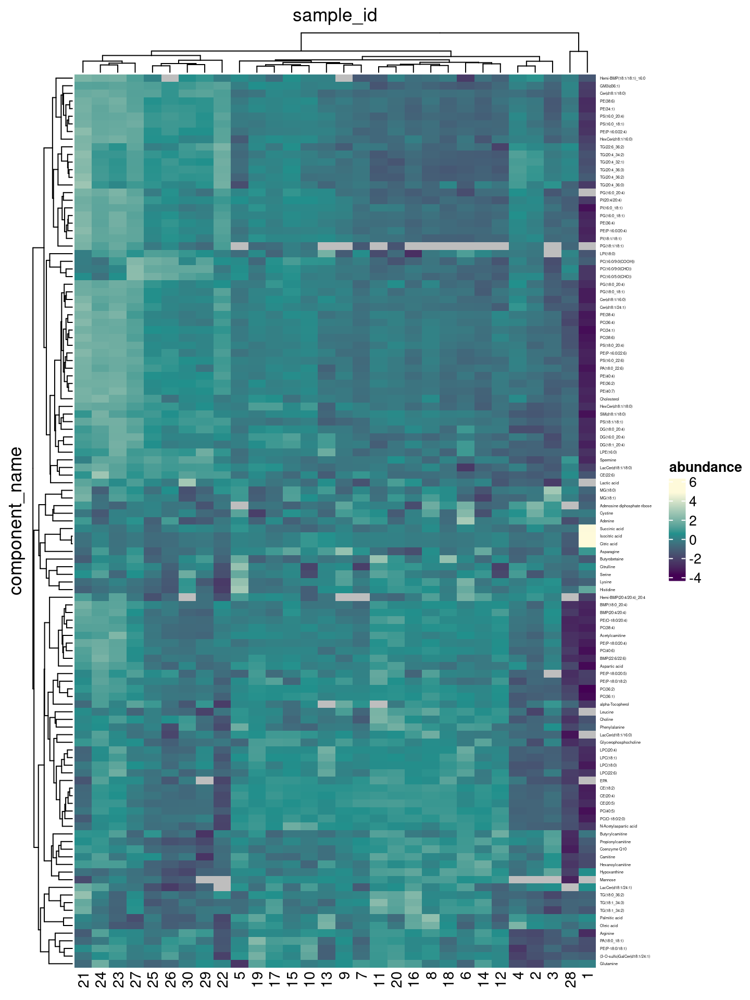
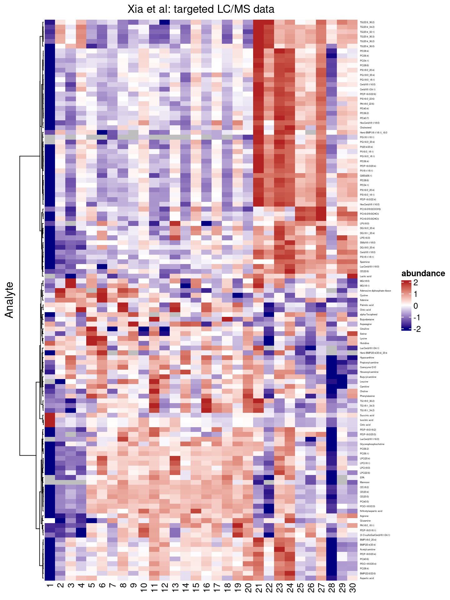
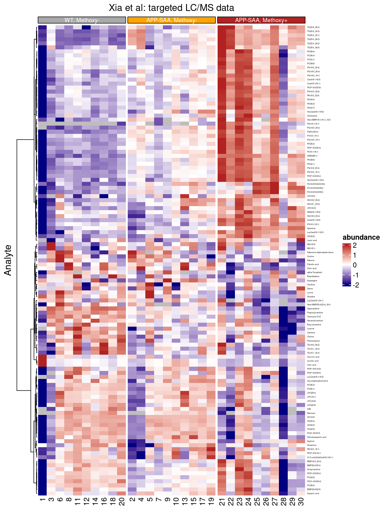
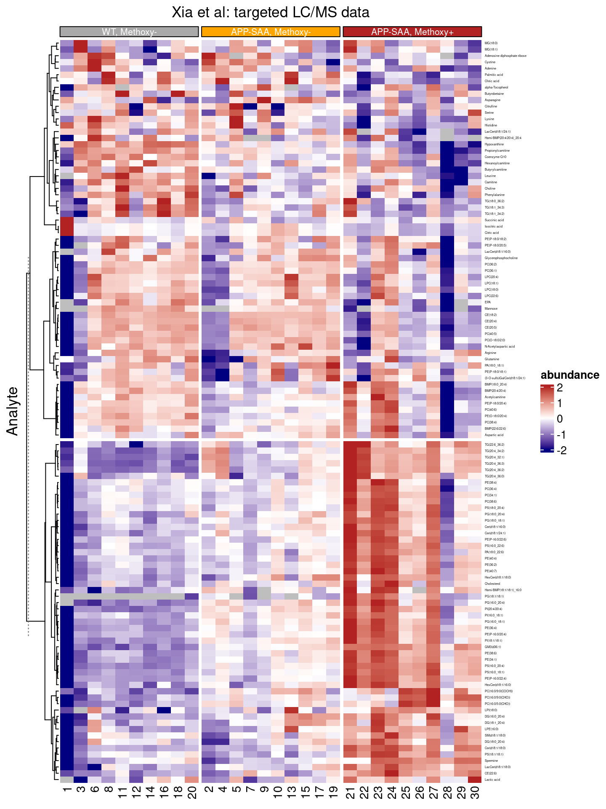
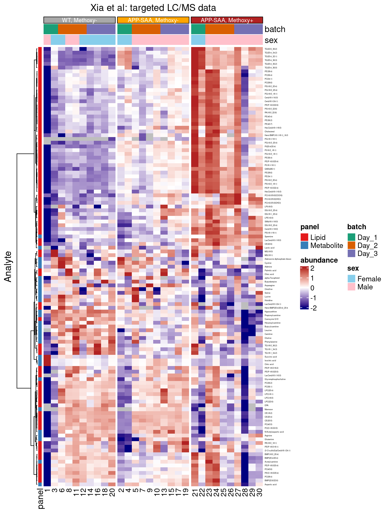
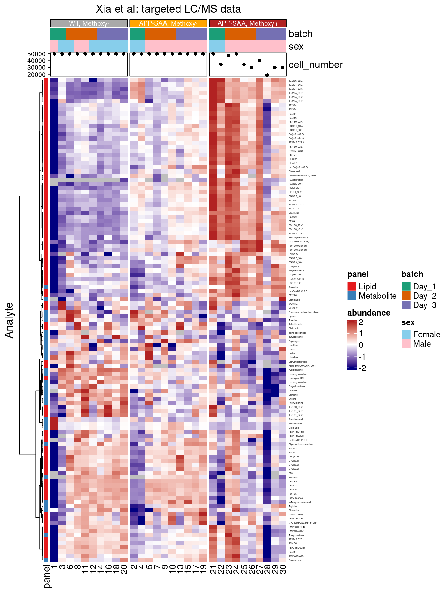
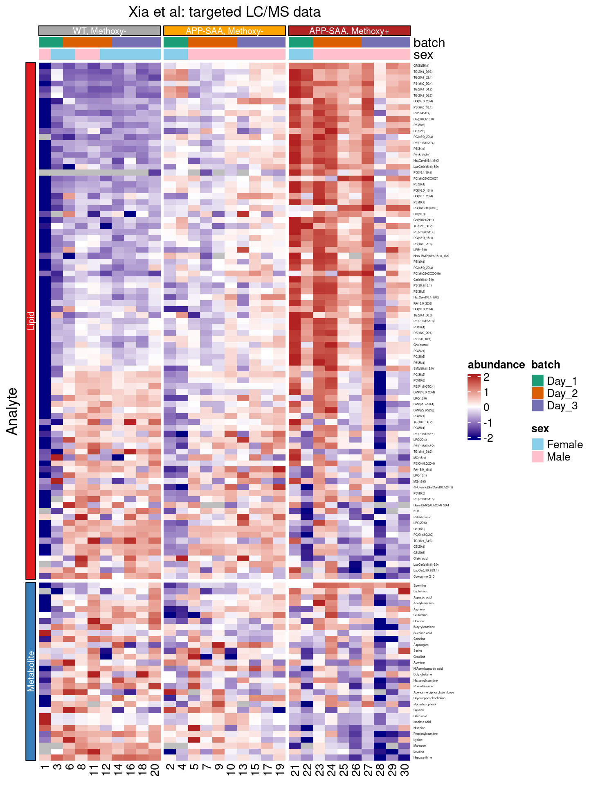
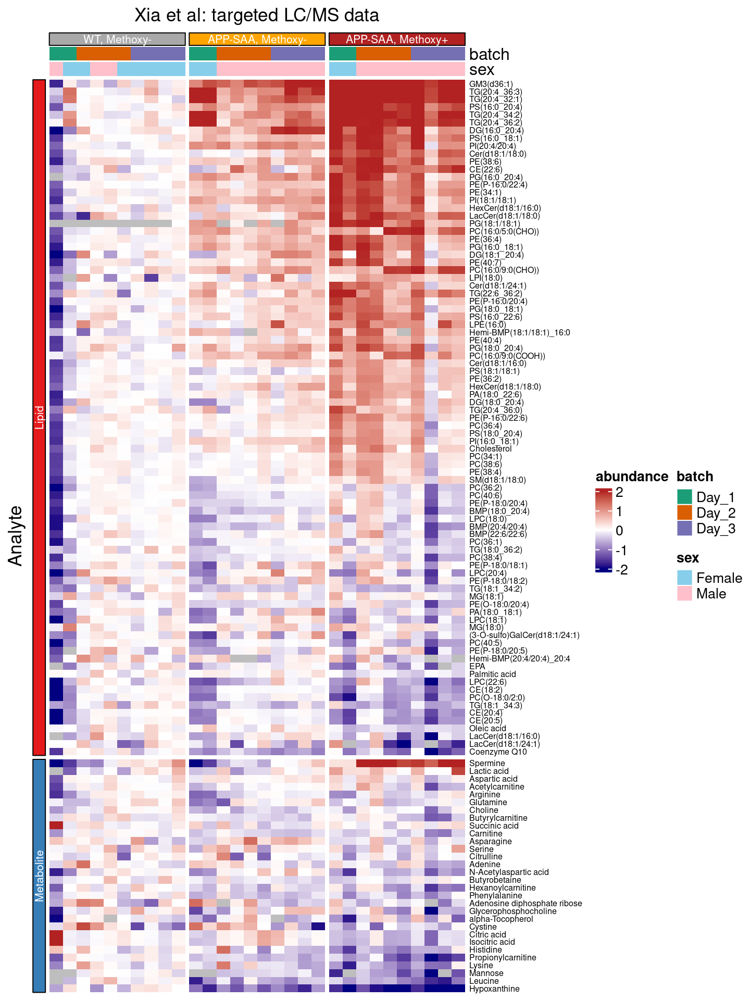

install.packages("tidyHeatmap")tl;dr
This week I learned about the tidyHeatmap package, which wraps the functionality of the awesome ComplexHeatmap R package into functions with a tidyverse interface. No more need for pivoting tidy datasets into matrices and back!
Installing the tidyHeatmap R package
The tidyHeatmap R package is available from CRAN 1.
The latest release available from CRAN can be installed via:
and the latest development version (used in this tutorial) is available from github:
remotes::install_github("stemangiola/tidyHeatmap")
Note
At the time of writing, the latest version available from CRAN (version 1.8.1) is outdated; please install & use the latest development version from github (currently version 1.10.2) to follow along with this tutorial.
In addition, we will use the following R packages, all of which can be installed from CRAN with install.packages():
library(circlize) # to create continuous color gradients
library(dplyr) # wrangling tidy tables
library(grid) # to define witdth / height of annotations using grid::unit()
library(ragg) # to generate high quality graphics
library(RColorBrewer) # to access predefined color palettes
library(tibble) # to convert data.frames to tibbles
library(tidyHeatmap) # the main act: plotting & annotating heatmapsTargeted lipidomics data published by Xia et al
In this tutorial we will used targeted mass spectrometry data published by Xia et al, Molecular neurodegeneration, 2022 and reproduce Figures 5a and 5b2:

Available datasets
- Normalized abundances: Supplementary table 8 is an excel file containing the normalized abundances for 225 analytes measured across 30 samples.
- The
get_abundances()function defined in the callout box below starts by downloading the supplementary excel file, and then wrangles sample annotations, feature annotations and the measurements into a tidy tibble. - Alternatively, you can download a CSV file with the pre-wrangled dataset here.
- The
The get_abundances() function
library(checkmate) # helper function for (optional) helper functions
library(readxl) # reading excel files
library(tidyr) # pivoting from wide to long tables (and more!)
#' @noRd
#' @param path Scalar character, the path to the supplementary excel file
#' @importFrom checkmate assert_file
#' @importFrom readxl read_excel
.parse_sample_annotations <- function(path) {
checkmate::assert_file(path)
# parse sample- and feature-annotations, and normalized abundances
df <- readxl::read_excel(path, sheet = "sample_annotations")
df$sample_id <- vapply(
strsplit(df$sample_id, "_"), \(x) x[[2]], FUN.VALUE = character(1)
)
df[, c("sample_id", "description", "cell_number", "genotype", "condition",
"sex", "batch")]
}
#' @noRd
#' @param path Scalar character, the path to the supplementary excel file
#' @importFrom checkmate assert_file
#' @importFrom readxl read_excel
.parse_feature_annotations <- function(path) {
checkmate::assert_file(path)
df <- readxl::read_excel(path, sheet = "feature_annotations")
df <- df[, grep("QTRAP|XEVO|m.z", colnames(df), invert = TRUE)]
df <- df[!duplicated(df$component_name), ]
df$feature_id <- NULL
df <- df[!df$is_internal_standard,]
df[, setdiff(
colnames(df), c("is_internal_standard")),
drop = FALSE]
}
#' @noRd
#' @param path Scalar character, the path to the supplementary excel file
#' @importFrom checkmate assert_file
#' @importFrom tidyr pivot_longer
#' @importFrom readxl read_excel
.parse_abundances <- function(path) {
checkmate::assert_file(path)
df <- readxl::read_excel(path, sheet = "peak_area_ratio_to_is")
df <- data.frame(
component_name = df$component_name,
df[, grep("^NE", colnames(df), value = TRUE)]
)
df <- tidyr::pivot_longer(df, cols = setdiff(colnames(df), "component_name"),
names_to = "sample_id", values_to = "abundance")
df$sample_id <- vapply(
strsplit(df$sample_id, "_"), \(x) x[[2]], FUN.VALUE = character(1)
)
return(df)
}
#' Retrieve targeted LC/MS data published by Xia et al, 2022 as Suppl. Table 7
#' @importFrom dplyr left_join join_by
#' @export
#' @return A tidy tibble with 2,718 rows and 9 columns
#' @source [Xia et al, Molecular neurodegeneration, 2022](https://molecularneurodegeneration.biomedcentral.com/articles/10.1186/s13024-022-00547-7)
#' @examples
#' get_abundances()
get_abundances <- function() {
url <- paste0(
"https://static-content.springer.com/esm/art%3A10.1186%2Fs13024-022-00547-7/",
"MediaObjects/13024_2022_547_MOESM15_ESM.xlsx")
# retrieve the first supplementary data file
tmp_file <- tempfile(fileext = ".xlsx")
download.file(url, tmp_file, quiet = TRUE)
# parse sample- and feature-annotations & normalized abundances
sample_anno <- .parse_sample_annotations(tmp_file)
feature_anno <- .parse_feature_annotations(tmp_file)
abundances <- .parse_abundances(tmp_file)
# join all tables into a single tidy tibble
dplyr::left_join(
feature_anno, abundances, by = dplyr::join_by("component_name")) |>
dplyr::left_join(sample_anno, by = dplyr::join_by("sample_id")) |>
dplyr::mutate(
sample_id = factor(sample_id, levels = as.character(seq.int(30))),
sex = factor(sex),
condition = factor(condition),
ionization = factor(ionization),
batch = factor(batch),
genotype = factor(genotype, levels = c("WT", "APP_SAA_Hom")),
group = factor(paste(genotype, condition, sep = ", "),
levels = c("WT, Methoxy_Neg", "APP_SAA_Hom, Methoxy_Neg",
"APP_SAA_Hom, Methoxy_Pos")),
group = dplyr::recode_factor(
group,
"WT, Methoxy_Neg" = "WT, Methoxy-",
"APP_SAA_Hom, Methoxy_Neg" = "APP-SAA, Methoxy-",
"APP_SAA_Hom, Methoxy_Pos" = "APP-SAA, Methoxy+"
)
)
}- Differential abundance analysis: Supplementary table 8 is an excel file with the results of the differential abundance analysis (performed by fitting a linear model for each analyte with the limma Bioconductor package ), e.g. it provides log2 fold changes, p-values, and adjusted p-values (FDR) for multiple comparisons of interest.
- The
get_stats()function, shown in the callout box below, retrieves and parses this file for us and returns a tidy tibble. - Alternatively, you can download the pre-wrangled statistics in a CSV file here.
- The
The get_stats() function
#| message: false
library(readxl) # reading excel files
#’ Retrieve and parse differential abundance statistics from Suppl. Table 8 #’ @noRd #’ @examples #’ get_stats() get_stats <- function() { url <- paste0( “https://static-content.springer.com/esm/art%3A10.1186%2Fs13024”, “-022-00547-7/MediaObjects/13024_2022_547_MOESM16_ESM.xlsx” ) tmp_file <- tempfile(fileext = “.xlsx”) download.file(url, tmp_file, quiet = TRUE) readxl::read_excel(tmp_file, sheet = “3. APP_pos_vs_WT_neg”) |> dplyr::rename(component_name = “symbol”) }
:::
First, we download and read the two CSV files with the pre-wrangled abundance
and statistics data. For compatibility with the `tidyHeatmap` package,
we convert both tables into tibbles as well:
::: {.cell}
```{.r .cell-code}
df <- read.csv(
'https://raw.githubusercontent.com/tomsing1/tidy_heatmap/main/abundances.csv',
stringsAsFactors=TRUE) |>
tibble::as_tibble()
stats <- read.csv(
'https://raw.githubusercontent.com/tomsing1/tidy_heatmap/main/statistics.csv',
stringsAsFactors=TRUE) |>
tibble::as_tibble()
stopifnot(all(stats$component_name %in% df$component_name))Xia et al only included analytes with a log2 fold change > 20% and an adjusted p-values < 0.1 in Figure 5. Let’s identify the names of the significant analytes in our stats data.frame by applying these thresholds. Then we order the analytes by their log2 fold change and pull out the component_name column.
significant <- stats |>
dplyr::filter(abs(stats$logFC) > 0.2, adj.P.Val < 0.1) |>
dplyr::arrange(desc(logFC)) |>
dplyr::pull(component_name)
head(significant)[1] GM3(d36:1) TG(20:4_36:3) Spermine TG(20:4_32:1) PS(16:0_20:4)
[6] TG(20:4_34:2)
225 Levels: (3-O-sulfo)GalCer(d18:1/16:0) ... XanthineWe retain 117 significant analytes, e.g. GM3(d36:1), TG(20:4_36:3) and Spermine are most strongly increased in APP-SAA, methoxy+ compared to WT, methoxy- samples.
Next, we subset the abundance table (df) to only retain these significant analytes:
df <- df |>
dplyr::filter(component_name %in% significant)Now we have the data in a tidy tibble with 3510 rows and 13 columns.
To control the order of categorical variables (e.g. genotype or or batch), they are encoded as factors.3. To match the order of the groups in Figure 5, we recode the levels of the group variable, so the WT, Methoxy- group is listed first:
df$group = dplyr::recode_factor(
df$group,
"WT, Methoxy_Neg" = "WT, Methoxy-",
"APP_SAA_Hom, Methoxy_Neg" = "APP-SAA, Methoxy-",
"APP_SAA_Hom, Methoxy_Pos" = "APP-SAA, Methoxy+"
)summary(df) component_name ionization
(3-O-sulfo)GalCer(d18:1/24:1): 30 negative:1170
Acetylcarnitine : 30 positive:2340
Adenine : 30
Adenosine diphosphate ribose : 30
alpha-Tocopherol : 30
Arginine : 30
(Other) :3330
assigned_internal_standard panel sample_id
PC(15:0/18:1(d7))-Lipid-pos : 330 Lipid :2610 Min. : 1.0
TG(15:0/18:1(d7)/15:0)-Lipid-pos: 300 Metabolite: 900 1st Qu.: 8.0
PE(15:0/18:1(d7))-Lipid-neg : 240 Median :15.5
PE(15:0/18:1(d7))-Lipid-pos : 210 Mean :15.5
Arginine-d4C13-Metabolite-pos : 150 3rd Qu.:23.0
GlcCer(d18:1(d5)/18:0)-Lipid-pos: 150 Max. :30.0
(Other) :2130
abundance description cell_number genotype
Min. :-12.6100 HOM, Methoxy NEG:1170 Min. :19022 APP_SAA_Hom:2340
1st Qu.: -5.2800 HOM, Methoxy POS:1170 1st Qu.:47311 WT :1170
Median : -2.1395 WT, Methoxy NEG :1170 Median :50000
Mean : -2.1045 Mean :45504
3rd Qu.: 0.7407 3rd Qu.:50000
Max. : 13.2500 Max. :50000
NA's :38
condition sex batch group
Methoxy_Neg:2340 Female:1287 Day_1: 702 WT, Methoxy- :1170
Methoxy_Pos:1170 Male :2223 Day_2:1404 APP-SAA, Methoxy-:1170
Day_3:1404 APP-SAA, Methoxy+:1170
We are ready to plot our first heatmap!
A first heatmap
The tidyHeatmap R package provides wrapper functions that make the functionality of the ComplexHeatmap Bioconductor package available within a tidy workflow. 4
Creating a first heatmap is as easy as passing our tidy tibble into the tidyHeatmap::heatmap() function, and specifying which columns contain row identifiers, column identifiers and values:
heatmap(.data = df, .row = component_name, .column = sample_id,
.value = abundance, scale = "row")
Tip
The normalized abundances are hard to interpret (because analytes were normalized to different internal standards and don’t correspond to absolute concentrations). Luckily, we are mainly interested in more interested in the relative changes across samples (and groups of samples). By setting scale = "row", the values for each analyte are converted to z-scores - and the color scale indicates variation around the mean of each row.
We can pass additional arguments through to the ComplexHeatmap::Heatmap() function, e.g. specify another method to cluster rows via the clustering_method_rows argument, by suppressing column clustering entirely via cluster_columns=FALSE, or by defining the color palette to use 5.
colors <- circlize::colorRamp2(
breaks = c(-2, 0, 2),
# seq(2, -2, length.out = 11),
colors = c("navy", "white", "firebrick")
# RColorBrewer::brewer.pal(11, "RdBu")
)
heatmap(.data = df,
.row = component_name,
.column = sample_id,
.value = abundance,
column_title = "Xia et al: targeted LC/MS data",
row_title = "Analyte",
scale = "row",
cluster_columns = FALSE,
clustering_method_rows = "ward.D",
palette_value = colors
)
We can also introduce visual splits between the columns, e.g. separating the three genotypes from each other, and assign a different color to each one:
df |>
group_by(group) |>
heatmap(.row = component_name,
.column = sample_id,
.value = abundance,
column_title = "Xia et al: targeted LC/MS data",
row_title = "Analyte",
scale = "row",
cluster_columns = FALSE,
clustering_method_rows = "ward.D",
clustering_method_columns = "ward.D",
palette_value = colors,
palette_grouping = list(
c("darkgrey", "orange", "firebrick")
)
)
Splitting features
The dendrogram (on the left) indicates that there might be two major groups of features in this dataset, e.g. there are two main branches.
Cutting the hierarchical clustering result
We can reinforce this result by cutting the dendrogram after two branches have arisen.
df |>
group_by(group) |>
heatmap(.row = component_name,
.column = sample_id,
.value = abundance,
column_title = "Xia et al: targeted LC/MS data",
row_title = "Analyte",
scale = "row",
cluster_columns = FALSE,
clustering_method_rows = "ward.D",
clustering_method_columns = "ward.D",
palette_value = colors,
palette_grouping = list(
c("darkgrey", "orange", "firebrick")
)
) |>
split_rows(2)
K-means clustering
Alternatively, we can can perform k-means clustering on the rows (or columns) by specifying the number of clusters (k) to isolate via the row_km argument. Our current dataset contains missing values (NA), which is incompatible with the k-means clustering algorithm. To use this method we first need to decide how to handle missing values, e.g. drop analytes or impute reasonable values.
Adding annotations
The annotation_tile() function6 allows us to add additional annotations to our heatmap, e.g. to identify
- columns from the
batchesor correspoding to animals with male or femalesexin an annotation bar on top of the heatmap, or - rows with values from different
panels(lipds, metabolits) in an annotation strip on the left of the heatmap.
df |>
group_by(group) |>
heatmap(.row = component_name,
.column = sample_id,
.value = abundance,
column_title = "Xia et al: targeted LC/MS data",
row_title = "Analyte",
scale = "row",
cluster_columns = FALSE,
clustering_method_rows = "ward.D",
clustering_method_columns = "ward.D",
palette_value = colors,
palette_grouping = list(
c("darkgrey", "orange", "firebrick")
)
) |>
annotation_tile(
batch,
palette = RColorBrewer::brewer.pal(3, "Dark2")
) |>
annotation_tile(sex,
palette = c("skyblue", "pink")) |>
annotation_tile(panel, size = grid::unit(5, "points"))
Row or column annotations?
The annotation_tile() function does not require us to specify whether we are adding row or column annotations. Instead, it infers it automatically:
- Does each value used to define a row of the heatmap (e.g.
component_name) map to a single value in the selected column of the data.frame?- If yes, create a row annotation strip.
- Does each value used to define a column of the heatmap (e.g.
sample_id) map to a single value in the selected column of the data.frame?- If yes, create a column annotation.
- If neither of the above are true, an error is raised.
Adding quantitative annotations
Some annotations are quantitative, and may be better communicated in a plot. Let’s display the number of cells that were analyzed in each sample on top of our heatmap with the add_point() function:
df |>
group_by(group) |>
heatmap(.row = component_name,
.column = sample_id,
.value = abundance,
column_title = "Xia et al: targeted LC/MS data",
row_title = "Analyte",
scale = "row",
cluster_columns = FALSE,
clustering_method_rows = "ward.D",
clustering_method_columns = "ward.D",
palette_value = colors,
palette_grouping = list(
c("darkgrey", "orange", "firebrick")
)
) |>
annotation_tile(
batch,
palette = RColorBrewer::brewer.pal(3, "Dark2")
) |>
annotation_tile(
sex,
palette = c("skyblue", "pink")
) |>
annotation_tile(panel, size = grid::unit(5, "points")) |>
annotation_point(cell_number)
Overlaying symbols
To highlight specific cells in our heatmap, the layer_point(), layer_arrow_up(), layer_arrow_down(), layer_diamond(), layer_square(), layer_star(), layer_text() or layer_asterisk() functions can be used, together with a filter condition 7.
Can you spot the asterisks for GM3(d36:1) for samples 1, 3, and 6 in the heatmap below?
df |>
group_by(group) |>
heatmap(.row = component_name,
.column = sample_id,
.value = abundance,
column_title = "Xia et al: targeted LC/MS data",
row_title = "Analyte",
scale = "row",
cluster_columns = FALSE,
clustering_method_rows = "ward.D",
clustering_method_columns = "ward.D",
palette_value = colors,
palette_grouping = list(
c("darkgrey", "orange", "firebrick")
)
) |>
annotation_tile(
batch,
palette = RColorBrewer::brewer.pal(3, "Dark2")
) |>
annotation_tile(sex,
palette = c("skyblue", "pink")) |>
annotation_tile(panel, size = grid::unit(5, "points")) |>
layer_asterisk(
component_name == "GM3(d36:1)" & sample_id %in% c("1", "3", "6")
)Manually ordering rows
For Figure 5, Xia et al manually ordered the rows, with those analytes showing the largest log2 fold increases at the top, and those with the largest decreases (e.g. negative log2 fold changes) at the bottom.
To reproduce this, we switch off the clustering of the rows, and change the order of the component_name factor to the significant character vector - which is ordered from largest to smallest fold change (see above) - with the dplyr::mutate() function.
df |>
dplyr::mutate(
component_name = factor(component_name, levels = significant)
) |>
group_by(group, panel) |>
heatmap(.row = component_name,
.column = sample_id,
.value = abundance,
column_title = "Xia et al: targeted LC/MS data",
row_title = "Analyte",
scale = "row",
cluster_columns = FALSE,
cluster_rows = FALSE,
palette_value = colors,
palette_grouping = list(
palette.colors(2, "Set1"),
c("darkgrey", "orange", "firebrick")
)
) |>
annotation_tile(
batch,
palette = RColorBrewer::brewer.pal(3, "Dark2"),
size = grid::unit(10, "points")
) |>
annotation_tile(
sex,
palette = c("skyblue", "pink"),
size = grid::unit(10, "points")
)
In this step, we also changed the group_by command: we grouped by both the group and the panel annotations, splitting columns and rows of our heatmap into separate panels, respectively.
Manually scaling rows
So far, we have scaled each row by converting the measurements for each analyte to z-scores, and the colors reflect differences from the overall mean across all samples.
In many experiments, including this one, there is an explicit experimental group that provides a natural baseline. The effects of the APP-SAA genotype is usually interpret relative to the WT control group. We therefore center the abundances by subtracting the median value observed in this (e.g. the WT, methoxy-) group. Now the colors indicate log2 fold changes relative to the median in the control group.
Tip
Here, we use functions from the dplyr package to
group_by: group the tibble bycomponent_name, so we can perform calculations separately for each analyte,mutate: calculate the median for the abundances observed in theWT, Methoxy-group (for this analyte)mutate: subtract the control median from each value (for this analyte).ungroup: ungroup the tibble, so we can continue with the full dataset.
df |>
dplyr::mutate(
component_name = factor(component_name, levels = significant)
) |>
dplyr::group_by(component_name) |>
dplyr::mutate(
ctrl_median = median(abundance[group == "WT, Methoxy-"], na.rm = TRUE),
abundance = abundance - ctrl_median
) |>
dplyr::ungroup() |>
group_by(group, panel) |>
heatmap(.row = component_name,
.column = sample_id,
.value = abundance,
column_title = "Xia et al: targeted LC/MS data",
row_title = "Analyte",
cluster_columns = FALSE,
cluster_rows = FALSE,
show_column_names = FALSE,
row_names_gp = grid::gpar(fontsize = 6),
palette_value = colors,
palette_grouping = list(
palette.colors(2, "Set1"),
c("darkgrey", "orange", "firebrick")
)
) |>
annotation_tile(
batch,
palette = RColorBrewer::brewer.pal(3, "Dark2"),
size = grid::unit(10, "points")
) |>
annotation_tile(
sex,
palette = c("skyblue", "pink"),
size = grid::unit(10, "points")
)
We also added the row_names_gp = grid::gpar(fontsize = 6) argument to the heatmap() call, increasing the font size of the row labels. (They are still a bit on the small side, so you might want to consider labelling only a subset.)
Reproducibility
Session information
sessionInfo()R version 4.3.2 (2023-10-31)
Platform: x86_64-pc-linux-gnu (64-bit)
Running under: Debian GNU/Linux 12 (bookworm)
Matrix products: default
BLAS: /usr/lib/x86_64-linux-gnu/blas/libblas.so.3.11.0
LAPACK: /usr/lib/x86_64-linux-gnu/lapack/liblapack.so.3.11.0
locale:
[1] LC_CTYPE=en_US.UTF-8 LC_NUMERIC=C
[3] LC_TIME=en_US.UTF-8 LC_COLLATE=en_US.UTF-8
[5] LC_MONETARY=en_US.UTF-8 LC_MESSAGES=en_US.UTF-8
[7] LC_PAPER=en_US.UTF-8 LC_NAME=C
[9] LC_ADDRESS=C LC_TELEPHONE=C
[11] LC_MEASUREMENT=en_US.UTF-8 LC_IDENTIFICATION=C
time zone: America/Los_Angeles
tzcode source: system (glibc)
attached base packages:
[1] grid stats graphics grDevices datasets utils methods
[8] base
other attached packages:
[1] tidyr_1.3.1 readxl_1.4.3 checkmate_2.3.2 tidyHeatmap_1.10.2
[5] tibble_3.2.1 RColorBrewer_1.1-3 ragg_1.3.3 dplyr_1.1.4
[9] circlize_0.4.16
loaded via a namespace (and not attached):
[1] gtable_0.3.5 shape_1.4.6.1 rjson_0.2.23
[4] xfun_0.37 ggplot2_3.5.1 htmlwidgets_1.6.1
[7] GlobalOptions_0.1.2 bspm_0.5.5 vctrs_0.6.5
[10] tools_4.3.2 generics_0.1.3 stats4_4.3.2
[13] parallel_4.3.2 fansi_1.0.6 cluster_2.1.6
[16] pkgconfig_2.0.3 S4Vectors_0.40.2 lifecycle_1.0.3
[19] compiler_4.3.2 farver_2.1.2 textshaping_0.4.0
[22] munsell_0.5.1 codetools_0.2-19 ComplexHeatmap_2.18.0
[25] clue_0.3-65 htmltools_0.5.4 yaml_2.3.7
[28] pillar_1.9.0 crayon_1.5.3 iterators_1.0.14
[31] viridis_0.6.5 foreach_1.5.2 tidyselect_1.2.1
[34] digest_0.6.31 purrr_1.0.2 fastmap_1.1.1
[37] colorspace_2.1-1 cli_3.6.3 magrittr_2.0.3
[40] patchwork_1.3.0 utf8_1.2.4 withr_3.0.1
[43] backports_1.5.0 scales_1.3.0 rmarkdown_2.20
[46] matrixStats_1.4.1 gridExtra_2.3 cellranger_1.1.0
[49] png_0.1-8 GetoptLong_1.0.5 evaluate_0.20
[52] knitr_1.42 IRanges_2.36.0 doParallel_1.0.17
[55] viridisLite_0.4.2 rlang_1.1.4 dendextend_1.18.0
[58] glue_1.6.2 BiocManager_1.30.25 renv_1.0.11
[61] BiocGenerics_0.48.1 rstudioapi_0.14 jsonlite_1.8.4
[64] R6_2.5.1 systemfonts_1.1.0 
This work is licensed under a Creative Commons Attribution 4.0 International License.
Footnotes
Because
tidyHeatmaprelies heavily on other packages from the tidyverse, e.g. the dplyr and tidyr R packages, it has a relatively deep dependency tree. But that’s par for the course if you want to adopt the tidy tools API by using Posit’s toolchain.↩︎Well approximately: In the publication the authors estimated and subtracted effects due to
batch,sexand two surrogate variables with a linear model, and then plotted the residuals for each data point. This adjustment was motivated by the experimental design and the statistical analysis, which also incorporated these covariates to determine whether differences between the experimental groups were statistically significant. Here, we will plot the normalized abundances for each analyte directly, without any adjustment. Nevertheless, the heatmap will look quite similar (albeit not quite as smooth as the original).↩︎For example, the two possible values of
genotypeare:WTandAPP_SAA_Hom, and the three levels of thegroupvariable areWT, Methoxy-,APP-SAA, Methoxy-andAPP-SAA, Methoxy+.↩︎The documentation of the
ComplexHeatmappackage is amazing: the Complete Reference contains to 15 chapters.↩︎See Heatmap’s help page for a full list of arguments.↩︎
Prior to
tidyHeatmapversion 1.9.0, theadd_tile()function was used instead. It is now deprecated in favor ofannotation_tile(). (At the time of writing, the latest version available from CRAN is version 1.8.1; please install & use the latest development version from github to follow along this tutorial.)↩︎At the time of writing, the latest version of the
tidyHeatmappackage available from CRAN is version 1.8.1. The development version used here, available from github, contains additional functionality, including e.g. thelayer_star()and - most importantly -layer_asterisk().↩︎